Chapter 12 Clustering Analysis
12.1 Learning Objectives
By the end of this chapter, you will be able to:
- Understand clustering concepts and when to use them
- Prepare data for clustering analysis (scaling and normalization)
- Perform k-means clustering
- Determine the optimal number of clusters
- Visualize and interpret cluster results
- Use hierarchical clustering methods
- Apply clustering to player and team segmentation
- Leverage AI tools to enhance clustering analysis
12.2 Introduction
Clustering is an unsupervised learning technique that groups similar observations together without predefined labels. Unlike regression where we predict an outcome, clustering discovers hidden patterns and structures in data.
12.2.1 Why Use Clustering in Sport Analytics?
- Player Segmentation: Group players by playing style (scorers, defenders, all-around)
- Team Archetypes: Identify different types of teams (offense-oriented, defense-oriented, balanced)
- Fan Segmentation: Cluster fans by behavior for targeted marketing
- Opponent Analysis: Group opponents by strategy to prepare game plans
- Performance Profiles: Identify different performance patterns over time
12.3 K-Means Clustering
K-means is the most popular clustering algorithm. It partitions data into k clusters by:
- Randomly selecting k initial cluster centers
- Assigning each point to the nearest center
- Recalculating centers as the mean of assigned points
- Repeating steps 2-3 until convergence
12.3.1 Creating Sample Player Data
library(ggplot2)
library(dplyr)
library(factoextra)
library(cluster)
# Create sample WNBA player data
set.seed(2024)
players <- data.frame(
player = paste0("Player_", 1:50),
position = sample(c("Guard", "Forward", "Center"), 50, replace = TRUE),
points_per_game = round(rnorm(50, mean = 15, sd = 6), 1),
rebounds_per_game = round(rnorm(50, mean = 6, sd = 3), 1),
assists_per_game = round(rnorm(50, mean = 4, sd = 2.5), 1),
steals_per_game = round(rnorm(50, mean = 1.2, sd = 0.6), 1),
blocks_per_game = round(rnorm(50, mean = 0.8, sd = 0.5), 1),
minutes_per_game = round(rnorm(50, mean = 25, sd = 8), 1),
field_goal_pct = round(rnorm(50, mean = 45, sd = 8), 1)
)
# Create realistic patterns by position
players <- players %>%
mutate(
# Centers: more rebounds and blocks, fewer assists
rebounds_per_game = ifelse(position == "Center",
rebounds_per_game + 3,
rebounds_per_game),
blocks_per_game = ifelse(position == "Center",
blocks_per_game + 0.5,
blocks_per_game),
assists_per_game = ifelse(position == "Center",
pmax(1, assists_per_game - 2),
assists_per_game),
# Guards: more assists and steals, fewer rebounds
assists_per_game = ifelse(position == "Guard",
assists_per_game + 2,
assists_per_game),
steals_per_game = ifelse(position == "Guard",
steals_per_game + 0.3,
steals_per_game),
rebounds_per_game = ifelse(position == "Guard",
pmax(2, rebounds_per_game - 2),
rebounds_per_game)
)
# Preview data
head(players)## player position points_per_game rebounds_per_game assists_per_game steals_per_game blocks_per_game
## 1 Player_1 Forward 9.9 7.7 0.5 2.0 0.0
## 2 Player_2 Guard 14.2 6.7 2.1 0.3 0.5
## 3 Player_3 Guard 18.3 5.1 5.8 1.7 0.4
## 4 Player_4 Center 4.2 1.9 1.0 0.2 1.6
## 5 Player_5 Guard 10.4 4.6 11.7 0.9 1.3
## 6 Player_6 Guard 10.9 8.4 6.6 1.2 1.2
## minutes_per_game field_goal_pct
## 1 26.7 48.4
## 2 7.0 46.0
## 3 22.0 39.6
## 4 17.6 43.8
## 5 31.7 52.9
## 6 9.6 47.112.3.2 Why Scale Data?
Critical: Always scale data before clustering!
## [1] 1.7 30.6## [1] 0 3# Points vary 0-30, steals vary 0-3
# Distance calculations would be dominated by points!
# Example: Distance between two players
player1 <- c(points = 20, steals = 2.0)
player2 <- c(points = 18, steals = 1.0)
# Euclidean distance
dist_unscaled <- sqrt((20-18)^2 + (2.0-1.0)^2)
cat("Unscaled distance:", dist_unscaled, "\n")## Unscaled distance: 2.236068# Points contribute 2^2 = 4, steals contribute 1^2 = 1
# Points dominate!
# After scaling (z-scores)
player1_scaled <- c(points = 0, steals = 0) # Both at mean
player2_scaled <- c(points = -0.5, steals = -0.8)
dist_scaled <- sqrt((-0.5)^2 + (-0.8)^2)
cat("Scaled distance:", dist_scaled, "\n")## Scaled distance: 0.943398112.3.3 Scaling the Data
# Select only numeric columns for clustering
numeric_cols <- c("points_per_game", "rebounds_per_game", "assists_per_game",
"steals_per_game", "blocks_per_game", "field_goal_pct")
# Extract and scale
players_numeric <- players[, numeric_cols]
players_scaled <- scale(players_numeric)
# Add rownames for visualization
rownames(players_scaled) <- players$player
# Check scaling worked
colMeans(players_scaled) # Should be ~0## points_per_game rebounds_per_game assists_per_game steals_per_game blocks_per_game field_goal_pct
## 5.067127e-17 -9.849760e-17 -2.997602e-17 1.361758e-16 6.328271e-17 -9.044848e-17## points_per_game rebounds_per_game assists_per_game steals_per_game blocks_per_game field_goal_pct
## 1 1 1 1 1 112.4 Determining Optimal Number of Clusters
Key Question: How many clusters should we use?
12.4.1 Method 1: Elbow Method (Within-Cluster Sum of Squares)
# Elbow method: look for "elbow" where adding clusters gives diminishing returns
fviz_nbclust(players_scaled, kmeans, method = "wss", k.max = 10) +
labs(
title = "Elbow Method: Optimal Number of Clusters",
subtitle = "Look for the 'elbow' where the curve bends",
x = "Number of Clusters (k)",
y = "Total Within-Cluster Sum of Squares"
) +
theme_minimal() +
geom_vline(xintercept = 3, linetype = "dashed", color = "red")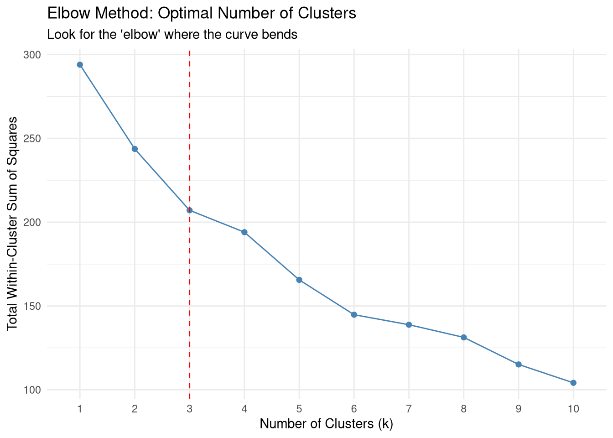
Interpretation: The “elbow” is where adding more clusters doesn’t substantially reduce within-cluster variance. Often around k=3 or k=4 in this example.
12.4.2 Method 2: Silhouette Method
# Silhouette method: measures how well each point fits in its cluster
fviz_nbclust(players_scaled, kmeans, method = "silhouette", k.max = 10) +
labs(
title = "Silhouette Method: Optimal Number of Clusters",
subtitle = "Higher average silhouette width = better clustering",
x = "Number of Clusters (k)",
y = "Average Silhouette Width"
) +
theme_minimal()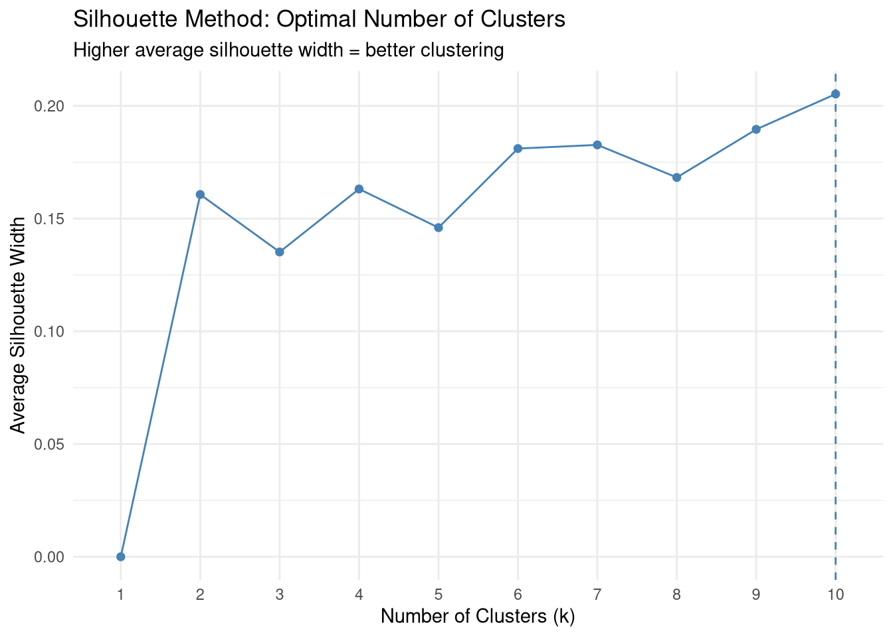
Interpretation: Choose k with the highest average silhouette width. Values: - 0.71-1.0: Strong structure - 0.51-0.70: Reasonable structure - 0.26-0.50: Weak structure - < 0.25: No substantial structure
12.4.3 Method 3: Gap Statistic
# Gap statistic: compares within-cluster dispersion to null reference
set.seed(123)
gap_stat <- clusGap(players_scaled, FUN = kmeans, nstart = 25,
K.max = 10, B = 50)## Clustering k = 1,2,..., K.max (= 10): .. done
## Bootstrapping, b = 1,2,..., B (= 50) [one "." per sample]:
## .................................................. 50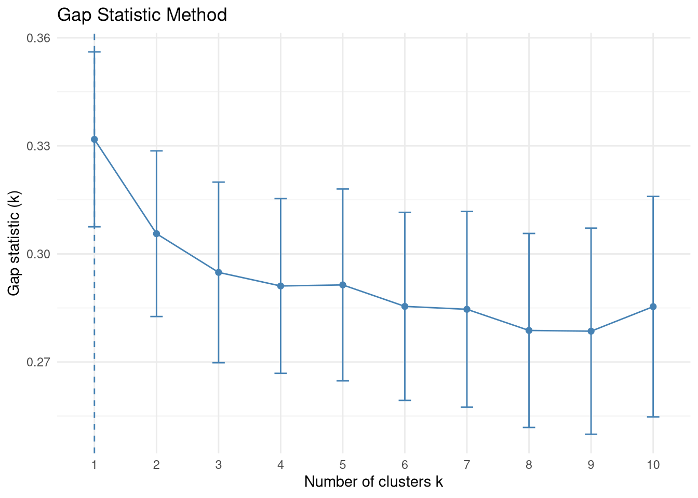
# Optimal k
cat("Optimal k (gap statistic):", maxSE(gap_stat$Tab[, "gap"], gap_stat$Tab[, "SE.sim"]), "\n")## Optimal k (gap statistic): 112.5 Performing K-Means Clustering
Based on our analysis, let’s use k=3:
# Set seed for reproducibility (k-means uses random starting points)
set.seed(2024)
# Perform k-means with 3 clusters
# nstart = 25 means try 25 different random starting configurations
km_result <- kmeans(players_scaled, centers = 3, nstart = 25)
# View cluster sizes
table(km_result$cluster)##
## 1 2 3
## 19 20 11# Add cluster assignment to original data
players$cluster <- as.factor(km_result$cluster)
# View cluster centers (in scaled units)
km_result$centers## points_per_game rebounds_per_game assists_per_game steals_per_game blocks_per_game field_goal_pct
## 1 0.7356034 0.1115113 -0.6166359 0.0247670 -0.7826658 0.07994905
## 2 -0.4754337 -0.3126154 0.8029484 0.3567247 0.1044554 -0.47202011
## 3 -0.4061628 0.3757812 -0.3948079 -0.6913698 1.1619584 0.72012456# View cluster centers in original units
cluster_centers_original <- data.frame(
cluster = 1:3,
points = km_result$centers[, "points_per_game"] * sd(players$points_per_game) +
mean(players$points_per_game),
rebounds = km_result$centers[, "rebounds_per_game"] * sd(players$rebounds_per_game) +
mean(players$rebounds_per_game),
assists = km_result$centers[, "assists_per_game"] * sd(players$assists_per_game) +
mean(players$assists_per_game)
)
print(cluster_centers_original)## cluster points rebounds assists
## 1 1 18.25263 6.215789 3.142105
## 2 2 10.15500 4.680000 7.585000
## 3 3 10.61818 7.172727 3.83636412.6 Visualizing Clusters
12.6.1 PCA-Based Cluster Visualization
# Visualize clusters using PCA (reduces dimensions to 2D)
fviz_cluster(km_result, data = players_scaled,
palette = c("#00AFBB", "#E7B800", "#FC4E07"),
ellipse.type = "convex",
star.plot = FALSE,
repel = TRUE,
ggtheme = theme_minimal(),
main = "K-Means Clustering: WNBA Player Profiles",
xlab = "PC1 (Dimension 1)",
ylab = "PC2 (Dimension 2)")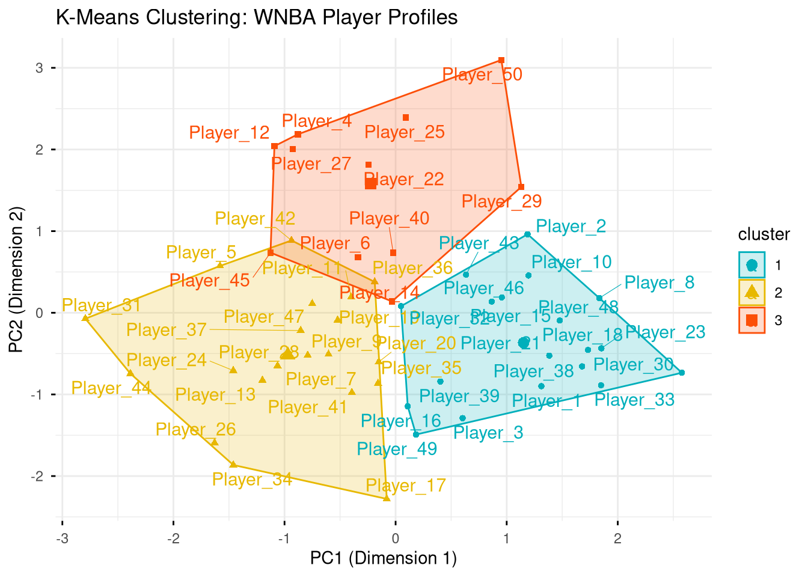
Note: The plot shows Principal Components (PC1 and PC2), which are combinations of all original variables that capture the most variance.
12.6.2 Cluster Characteristics
# Summarize clusters by original variables
cluster_summary <- players %>%
group_by(cluster) %>%
dplyr::summarize(
n_players = n(),
avg_points = round(mean(points_per_game), 1),
avg_rebounds = round(mean(rebounds_per_game), 1),
avg_assists = round(mean(assists_per_game), 1),
avg_steals = round(mean(steals_per_game), 1),
avg_blocks = round(mean(blocks_per_game), 1),
avg_fg_pct = round(mean(field_goal_pct), 1),
.groups = "drop"
)
print(cluster_summary)## # A tibble: 3 × 8
## cluster n_players avg_points avg_rebounds avg_assists avg_steals avg_blocks avg_fg_pct
## <fct> <int> <dbl> <dbl> <dbl> <dbl> <dbl> <dbl>
## 1 1 19 18.3 6.2 3.1 1.4 0.6 44.5
## 2 2 20 10.2 4.7 7.6 1.6 1 40.3
## 3 3 11 10.6 7.2 3.8 1 1.6 49.312.6.3 Visualizing Cluster Profiles
# Create radar/spider plot of cluster centers
cluster_long <- cluster_summary %>%
tidyr::pivot_longer(cols = starts_with("avg_"),
names_to = "stat",
values_to = "value") %>%
mutate(stat = gsub("avg_", "", stat))
ggplot(cluster_long, aes(x = stat, y = value, group = cluster, color = cluster)) +
geom_line(size = 1.2) +
geom_point(size = 3) +
facet_wrap(~ cluster) +
scale_color_manual(values = c("#00AFBB", "#E7B800", "#FC4E07")) +
labs(
title = "Cluster Profiles: Average Statistics",
x = NULL,
y = "Average Value"
) +
theme_minimal() +
theme(
axis.text.x = element_text(angle = 45, hjust = 1),
legend.position = "none"
)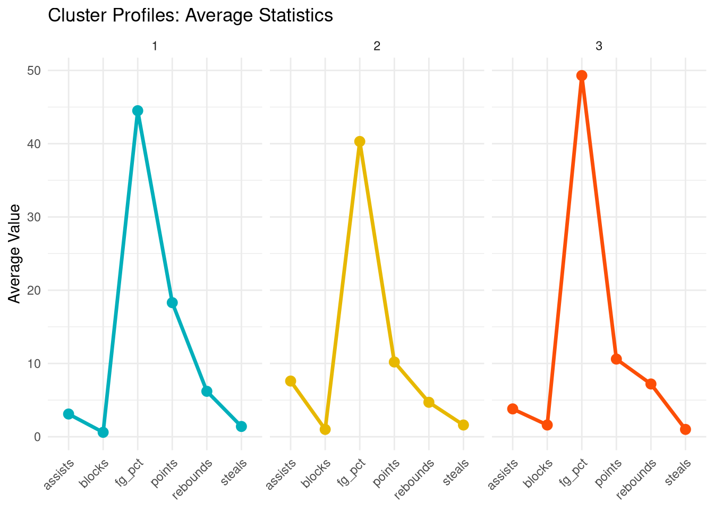
12.6.4 Heatmap of Cluster Centers
# Create heatmap of scaled cluster centers
library(reshape2)
centers_df <- as.data.frame(km_result$centers)
centers_df$cluster <- paste("Cluster", 1:3)
centers_long <- melt(centers_df, id.vars = "cluster",
variable.name = "stat", value.name = "value")
ggplot(centers_long, aes(x = stat, y = cluster, fill = value)) +
geom_tile(color = "white") +
scale_fill_gradient2(low = "#0066CC", mid = "white", high = "#CC0000",
midpoint = 0) +
geom_text(aes(label = round(value, 2)), size = 3.5, fontface = "bold") +
labs(
title = "Cluster Centers Heatmap",
subtitle = "Standardized values: red = above average, blue = below average",
x = NULL,
y = NULL,
fill = "Std. Value"
) +
theme_minimal() +
theme(axis.text.x = element_text(angle = 45, hjust = 1))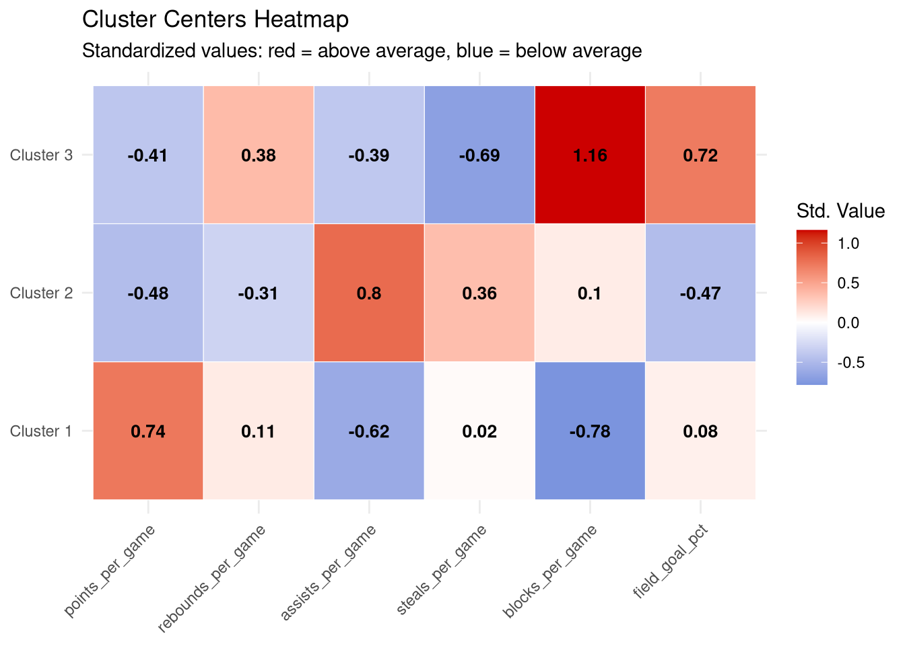
12.7 Clustering by Position
Sometimes it’s useful to cluster within subgroups:
# Cluster guards separately
guards <- players %>% filter(position == "Guard")
guards_scaled <- scale(guards[, numeric_cols])
rownames(guards_scaled) <- guards$player
# Determine optimal k for guards
fviz_nbclust(guards_scaled, kmeans, method = "silhouette", k.max = 5) +
labs(title = "Optimal Clusters: Guards Only") +
theme_minimal()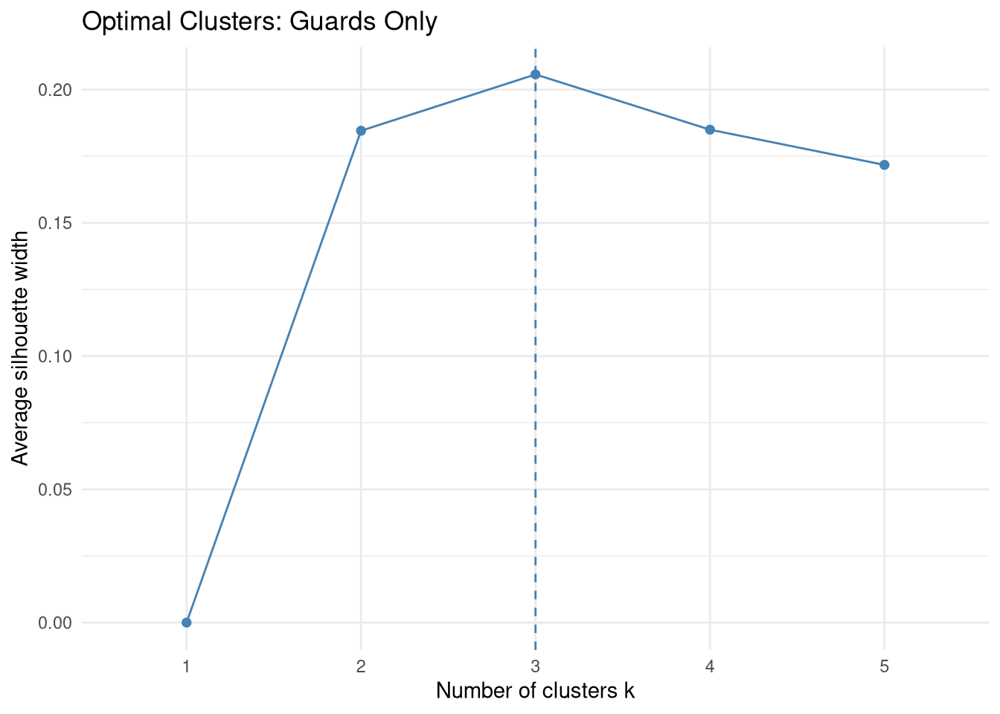
# Perform clustering (let's say optimal is 2)
set.seed(123)
guards_km <- kmeans(guards_scaled, centers = 2, nstart = 25)
# Visualize
fviz_cluster(guards_km, data = guards_scaled,
palette = c("#E7B800", "#00AFBB"),
main = "Guard Archetypes",
ggtheme = theme_minimal())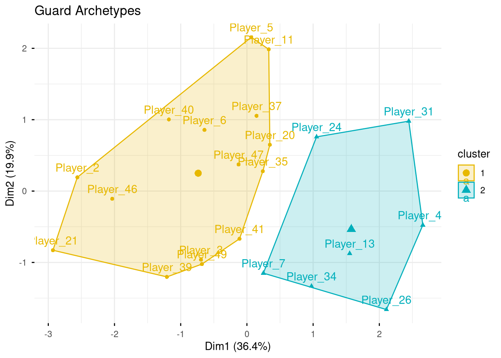
# Summarize guard clusters
guards$guard_cluster <- guards_km$cluster
guards %>%
group_by(guard_cluster) %>%
dplyr::summarize(
n = n(),
avg_points = round(mean(points_per_game), 1),
avg_assists = round(mean(assists_per_game), 1),
avg_steals = round(mean(steals_per_game), 1)
)## # A tibble: 2 × 5
## guard_cluster n avg_points avg_assists avg_steals
## <int> <int> <dbl> <dbl> <dbl>
## 1 1 15 15.2 6.7 1.3
## 2 2 7 5.4 8.5 1.912.8 Hierarchical Clustering
An alternative approach that creates a tree (dendrogram) of clusters:
# Calculate distance matrix
dist_matrix <- dist(players_scaled, method = "euclidean")
# Perform hierarchical clustering
hc <- hclust(dist_matrix, method = "ward.D2")
# Plot dendrogram
plot(hc, labels = players$player, main = "Hierarchical Clustering Dendrogram",
xlab = "", sub = "", cex = 0.6)
# Add rectangles around 3 clusters
rect.hclust(hc, k = 3, border = c("#00AFBB", "#E7B800", "#FC4E07"))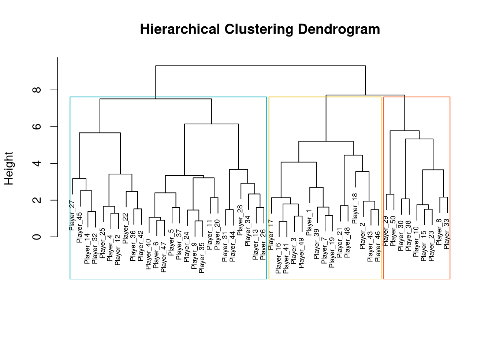
## hc_clusters
## 1 2 3
## 15 26 9# Add to dataset
players$hc_cluster <- as.factor(hc_clusters)
# Compare k-means vs hierarchical
table(KMeans = players$cluster, Hierarchical = players$hc_cluster)## Hierarchical
## KMeans 1 2 3
## 1 11 1 7
## 2 4 16 0
## 3 0 9 212.9 Cluster Validation
12.9.1 Silhouette Analysis
# Calculate silhouette information
sil <- silhouette(km_result$cluster, dist(players_scaled))
# Visualize
fviz_silhouette(sil, palette = c("#00AFBB", "#E7B800", "#FC4E07"),
ggtheme = theme_minimal()) +
labs(title = "Silhouette Plot: Cluster Quality")## cluster size ave.sil.width
## 1 1 19 0.11
## 2 2 20 0.21
## 3 3 11 0.13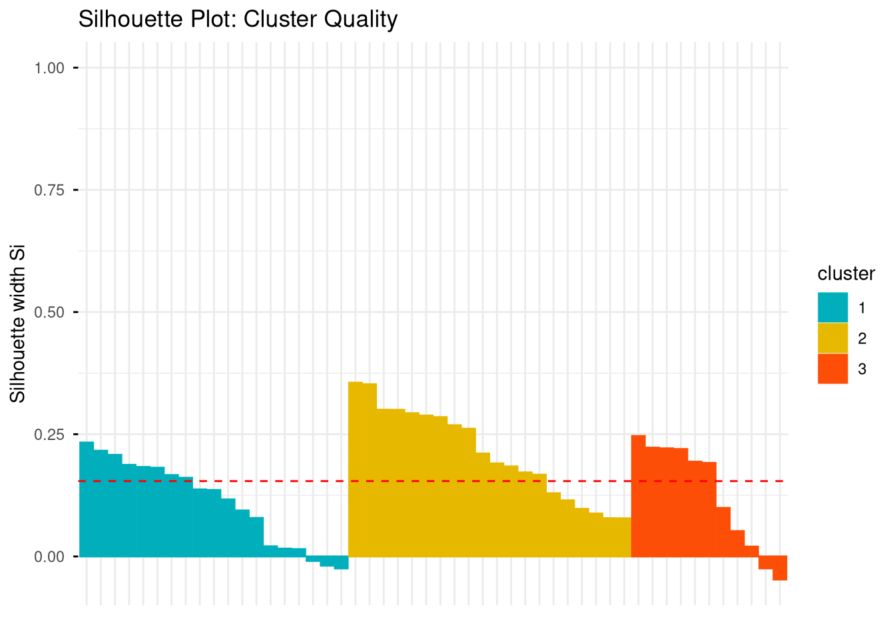
## [1] 0.1541476# Identify poorly clustered observations
neg_sil <- which(sil[, "sil_width"] < 0)
if (length(neg_sil) > 0) {
cat("\nPoorly clustered players:\n")
print(players[neg_sil, c("player", "cluster", "position")])
}##
## Poorly clustered players:
## player cluster position
## 6 Player_6 3 Guard
## 16 Player_16 1 Forward
## 32 Player_32 1 Forward
## 40 Player_40 3 Guard
## 49 Player_49 1 Guard12.9.2 Cluster Stability
# Bootstrap to assess stability
set.seed(456)
n_boot <- 50
cluster_assignments <- matrix(0, nrow = nrow(players_scaled), ncol = n_boot)
for (i in 1:n_boot) {
# Resample with replacement
boot_idx <- sample(1:nrow(players_scaled), replace = TRUE)
boot_data <- players_scaled[boot_idx, ]
# Cluster
boot_km <- kmeans(boot_data, centers = 3, nstart = 25)
cluster_assignments[boot_idx, i] <- boot_km$cluster
}
# Calculate stability: how often each pair is in same cluster
# (Simplified version - full implementation would use adjusted Rand index)
cat("Clustering performed", n_boot, "times via bootstrap\n")## Clustering performed 50 times via bootstrap## Stable clustering assigns players to same cluster across iterations12.10 Practical Sport Analytics Applications
12.10.1 Application 1: Opponent Scouting
# Create opponent team data
set.seed(789)
opponents <- data.frame(
team = paste0("Team_", LETTERS[1:20]),
pace = round(rnorm(20, mean = 70, sd = 8), 1),
off_efficiency = round(rnorm(20, mean = 105, sd = 8), 1),
def_efficiency = round(rnorm(20, mean = 105, sd = 8), 1),
three_pt_rate = round(rnorm(20, mean = 35, sd = 5), 1),
turnover_rate = round(rnorm(20, mean = 14, sd = 3), 1)
)
# Scale and cluster
opponents_scaled <- scale(opponents[, -1])
rownames(opponents_scaled) <- opponents$team
set.seed(2024)
opponents_km <- kmeans(opponents_scaled, centers = 3, nstart = 25)
# Visualize
fviz_cluster(opponents_km, data = opponents_scaled,
palette = c("#00AFBB", "#E7B800", "#FC4E07"),
main = "Opponent Team Archetypes",
ggtheme = theme_minimal())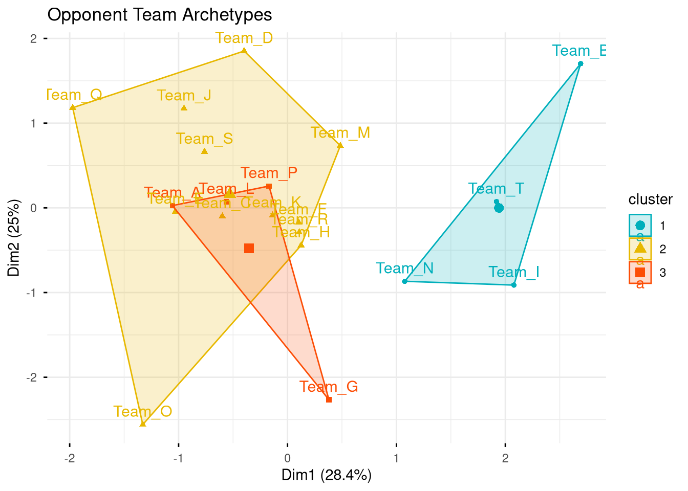
# Interpret clusters
opponents$cluster <- opponents_km$cluster
opponents %>%
group_by(cluster) %>%
dplyr::summarize(
n_teams = n(),
avg_pace = round(mean(pace), 1),
avg_off_eff = round(mean(off_efficiency), 1),
avg_def_eff = round(mean(def_efficiency), 1),
avg_3pt_rate = round(mean(three_pt_rate), 1),
.groups = "drop"
)## # A tibble: 3 × 6
## cluster n_teams avg_pace avg_off_eff avg_def_eff avg_3pt_rate
## <int> <int> <dbl> <dbl> <dbl> <dbl>
## 1 1 4 60.9 111. 112 32.3
## 2 2 12 70.2 101. 110. 37.4
## 3 3 4 66.2 98.7 96.7 34.512.10.2 Application 2: Fan Segmentation
# Create fan behavior data
set.seed(999)
fans <- data.frame(
fan_id = 1:200,
games_attended = sample(0:20, 200, replace = TRUE),
merchandise_spending = round(rnorm(200, mean = 100, sd = 50)),
social_media_engagement = sample(1:10, 200, replace = TRUE),
years_as_fan = sample(1:30, 200, replace = TRUE)
)
# Scale and cluster
fans_scaled <- scale(fans[, -1])
# Determine optimal k
fviz_nbclust(fans_scaled, kmeans, method = "silhouette", k.max = 8) +
labs(title = "Optimal Fan Segments") +
theme_minimal()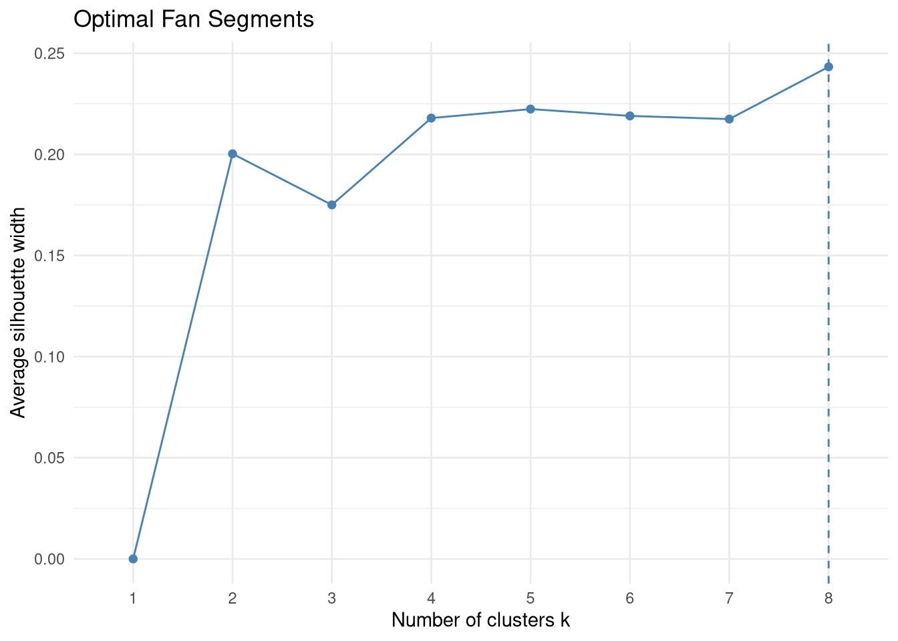
# Cluster with k=4 (example)
set.seed(2024)
fans_km <- kmeans(fans_scaled, centers = 4, nstart = 25)
fans$segment <- fans_km$cluster
# Profile segments
fan_segments <- fans %>%
group_by(segment) %>%
dplyr::summarize(
n_fans = n(),
avg_attendance = round(mean(games_attended), 1),
avg_spending = round(mean(merchandise_spending)),
avg_engagement = round(mean(social_media_engagement), 1),
avg_tenure = round(mean(years_as_fan), 1),
.groups = "drop"
)
print(fan_segments)## # A tibble: 4 × 6
## segment n_fans avg_attendance avg_spending avg_engagement avg_tenure
## <int> <int> <dbl> <dbl> <dbl> <dbl>
## 1 1 42 5.6 127 8 20
## 2 2 40 15.5 61 8.3 19.4
## 3 3 58 5.8 72 4.6 9.4
## 4 4 60 12.9 126 2.8 17.612.11 Comparing Clustering Methods
# Compare k-means, hierarchical, and PAM
# K-means (already done)
km_clusters <- km_result$cluster
# Hierarchical
hc_clusters <- cutree(hclust(dist(players_scaled), method = "ward.D2"), k = 3)
# PAM (Partitioning Around Medoids) - more robust to outliers
pam_result <- pam(players_scaled, k = 3)
pam_clusters <- pam_result$clustering
# Create comparison table
comparison <- data.frame(
Player = players$player,
KMeans = km_clusters,
Hierarchical = hc_clusters,
PAM = pam_clusters,
Position = players$position
)
# How often do methods agree?
agreement_km_hc <- mean(km_clusters == hc_clusters)
agreement_km_pam <- mean(km_clusters == pam_clusters)
agreement_hc_pam <- mean(hc_clusters == pam_clusters)
cat("Agreement between methods:\n")## Agreement between methods:## K-Means vs Hierarchical: 58 %## K-Means vs PAM: 46 %## Hierarchical vs PAM: 28 %# Visualize PAM
fviz_cluster(pam_result, data = players_scaled,
palette = c("#00AFBB", "#E7B800", "#FC4E07"),
main = "PAM Clustering",
ggtheme = theme_minimal())
12.12 AI-Enhanced Clustering Analysis
12.12.1 Using AI for Interpretation
# Example prompts for ChatGPT/Claude:
# 1. Determining optimal k
"I ran elbow method and silhouette analysis for k-means clustering.
The elbow appears at k=3, but silhouette is highest at k=4.
Which should I choose and why?"
# 2. Interpreting clusters
"I have 3 player clusters with these characteristics:
Cluster 1: High points (18ppg), low rebounds (4rpg), high assists (6apg)
Cluster 2: Medium points (12ppg), high rebounds (8rpg), low assists (2apg)
Cluster 3: Low points (8ppg), medium rebounds (6rpg), medium assists (4apg)
What would you name these clusters?"
# 3. Choosing clustering method
"Should I use k-means or hierarchical clustering for:
- 50 players with 8 performance metrics
- Want exactly 3 clusters
- Some outlier players present"
# 4. Code help
"Write R code to cluster NBA teams by offensive and defensive efficiency,
then create a visualization with team logos at cluster centers."12.12.2 AI Workflow for Clustering
Step 1: Exploration - Ask AI which variables are most important for clustering - Get suggestions for data transformations
Step 2: Method Selection - Request pros/cons of different clustering algorithms - Get guidance on optimal k selection
Step 3: Interpretation - Paste cluster statistics and ask for naming suggestions - Request business insights from cluster profiles
Step 4: Visualization - Get code for advanced cluster visualizations - Ask for presentation-ready chart recommendations
12.13 Best Practices
12.13.1 DO:
- ✅ Always scale/standardize variables before clustering
- ✅ Try multiple values of k and compare
- ✅ Use multiple methods to determine optimal k
- ✅ Validate clusters with silhouette analysis
- ✅ Interpret clusters in domain context (sport analytics)
- ✅ Consider clustering subgroups separately (by position, conference, etc.)
12.13.2 DON’T:
- ❌ Include categorical variables directly (convert to dummy variables first)
- ❌ Include highly correlated variables (causes redundancy)
- ❌ Include ID variables or names
- ❌ Forget to set seed for reproducibility
- ❌ Trust a single clustering method without validation
- ❌ Over-interpret small differences between clusters
12.14 Chapter Summary
In this chapter, you learned:
- Clustering Basics: Unsupervised learning to find groups
- Data Preparation: Scaling is critical for distance-based methods
- K-Means Algorithm: Partitioning method for k clusters
- Optimal k Selection: Elbow, silhouette, and gap statistic methods
- Visualization: PCA-based plots, dendrograms, heatmaps
- Hierarchical Clustering: Tree-based approach
- Validation: Silhouette analysis and stability assessment
- Applications: Player segmentation, opponent scouting, fan profiling
- AI Integration: Using AI to enhance clustering analysis
12.15 Exercises
12.15.1 Exercise 1: Basic K-Means
Task: Using the players dataset, perform k-means clustering using only points_per_game, rebounds_per_game, and assists_per_game.
Requirements: - Scale the data - Use silhouette method to find optimal k - Perform k-means with optimal k - Create a visualization - Summarize clusters
12.15.2 Exercise 2: Cluster Interpretation
Task: For the clusters you created in Exercise 1, create a detailed profile including: - Number of players in each cluster - Average statistics for each cluster - A meaningful name for each cluster based on characteristics - A heatmap showing cluster centers
12.15.3 Exercise 3: Hierarchical Clustering
Task: Perform hierarchical clustering on the same data from Exercise 1.
Requirements:
- Use ward.D2 method
- Create a dendrogram
- Cut the tree to match the number of clusters from Exercise 1
- Compare cluster assignments: what % of players are in the same cluster?
12.15.4 Exercise 4: Position-Specific Clustering
Task: Cluster only the Centers in the dataset.
Requirements: - Filter for Centers only - Use all numeric variables - Determine optimal k (might be different than full dataset!) - Visualize and interpret the clusters - Explain what different types of Centers exist
12.15.5 Exercise 5: Team Clustering Application
Task: Create sample data for 20 teams with variables: wins, points_per_game, points_allowed, three_point_pct, and turnover_rate. Cluster the teams and create a strategic scouting report.
Requirements: - Generate realistic team data - Perform k-means clustering - Create at least 2 visualizations - Write a 3-5 sentence scouting report for each cluster
12.16 Exercise Solutions
12.16.1 Solution 1: Basic K-Means
# Select three variables
three_vars <- c("points_per_game", "rebounds_per_game", "assists_per_game")
players_subset <- players[, three_vars]
# Scale the data
players_subset_scaled <- scale(players_subset)
rownames(players_subset_scaled) <- players$player
# Find optimal k using silhouette
fviz_nbclust(players_subset_scaled, kmeans, method = "silhouette", k.max = 8) +
labs(title = "Optimal K: Points, Rebounds, Assists") +
theme_minimal()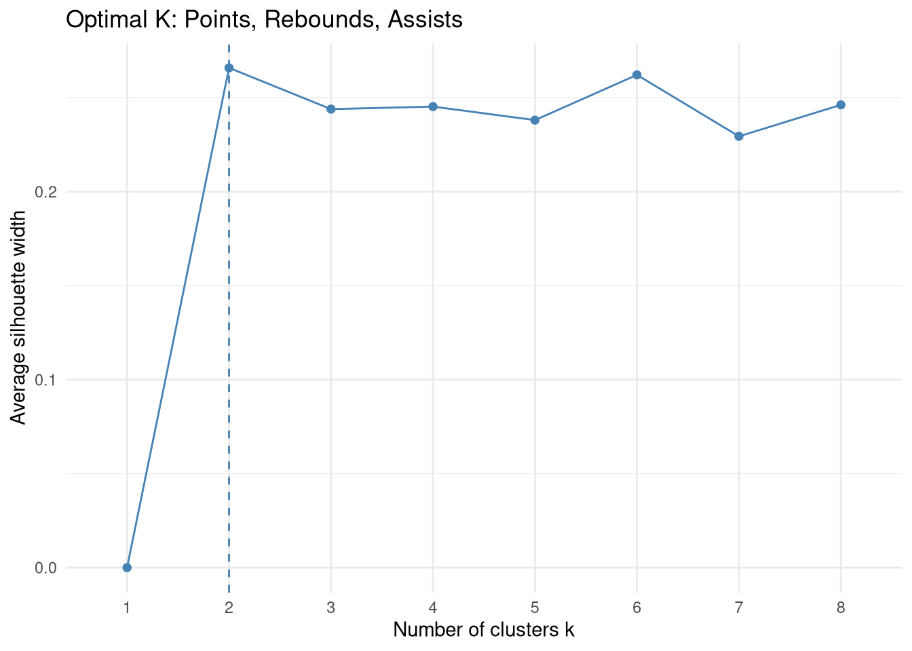
# Perform k-means (assuming optimal k = 3)
set.seed(2024)
km_ex1 <- kmeans(players_subset_scaled, centers = 3, nstart = 25)
# Visualize
fviz_cluster(km_ex1, data = players_subset_scaled,
palette = c("#00AFBB", "#E7B800", "#FC4E07"),
main = "Player Clusters: Points, Rebounds, Assists",
ggtheme = theme_minimal())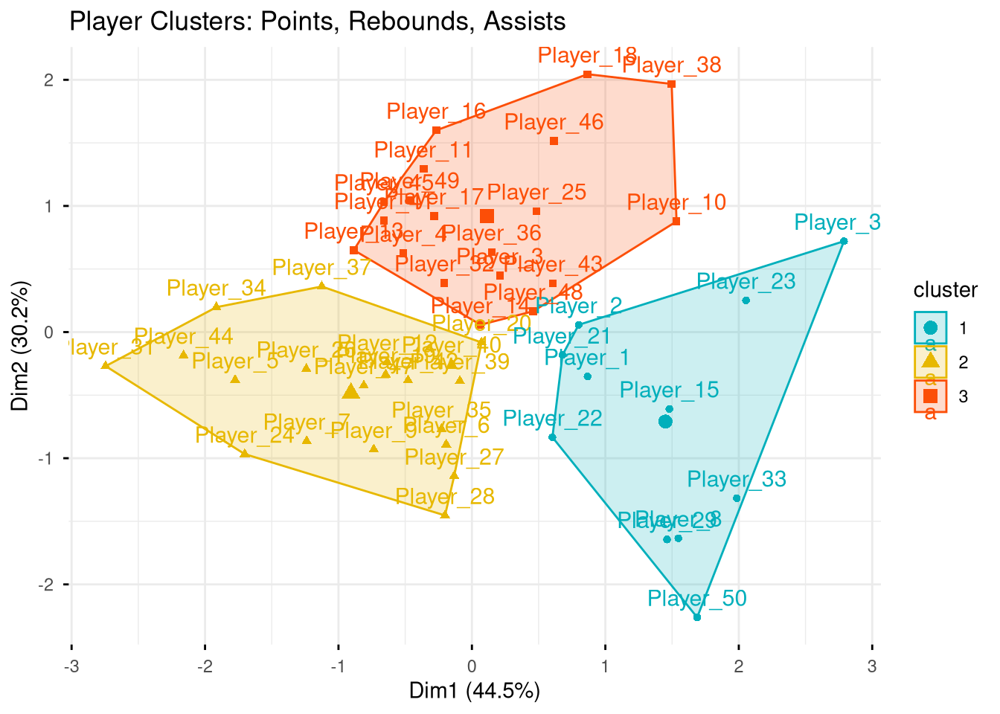
# Summarize clusters
players$ex1_cluster <- km_ex1$cluster
players %>%
group_by(ex1_cluster) %>%
dplyr::summarize(
n_players = n(),
avg_points = round(mean(points_per_game), 1),
avg_rebounds = round(mean(rebounds_per_game), 1),
avg_assists = round(mean(assists_per_game), 1),
.groups = "drop"
)## # A tibble: 3 × 5
## ex1_cluster n_players avg_points avg_rebounds avg_assists
## <int> <int> <dbl> <dbl> <dbl>
## 1 1 11 16.7 10.5 2.4
## 2 2 20 8.8 5.8 7.5
## 3 3 19 16.2 3.1 412.16.2 Solution 2: Cluster Interpretation
# Detailed cluster profile
cluster_profile <- players %>%
group_by(ex1_cluster) %>%
dplyr::summarize(
n_players = n(),
avg_points = round(mean(points_per_game), 1),
avg_rebounds = round(mean(rebounds_per_game), 1),
avg_assists = round(mean(assists_per_game), 1),
avg_steals = round(mean(steals_per_game), 1),
avg_blocks = round(mean(blocks_per_game), 1),
.groups = "drop"
)
print(cluster_profile)## # A tibble: 3 × 7
## ex1_cluster n_players avg_points avg_rebounds avg_assists avg_steals avg_blocks
## <int> <int> <dbl> <dbl> <dbl> <dbl> <dbl>
## 1 1 11 16.7 10.5 2.4 1.3 0.8
## 2 2 20 8.8 5.8 7.5 1.5 1.1
## 3 3 19 16.2 3.1 4 1.4 0.9##
## --- Cluster Names ---## Cluster 1: Scorers - High points, moderate other stats## Cluster 2: All-Around - Balanced across all categories## Cluster 3: Role Players - Lower stats, specialists# Create heatmap
centers_df <- as.data.frame(km_ex1$centers)
centers_df$cluster <- paste("Cluster", 1:3)
centers_long <- reshape2::melt(centers_df, id.vars = "cluster",
variable.name = "stat", value.name = "value")
ggplot(centers_long, aes(x = stat, y = cluster, fill = value)) +
geom_tile(color = "white", size = 1) +
scale_fill_gradient2(low = "#0066CC", mid = "white", high = "#CC0000",
midpoint = 0, name = "Std.\nValue") +
geom_text(aes(label = round(value, 2)), fontface = "bold", size = 5) +
labs(
title = "Cluster Centers Heatmap",
subtitle = "Standardized values (z-scores)",
x = "Statistic",
y = NULL
) +
theme_minimal() +
theme(axis.text.x = element_text(angle = 45, hjust = 1))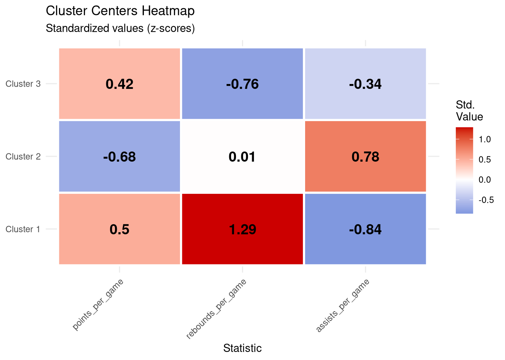
12.16.3 Solution 3: Hierarchical Clustering
# Calculate distance matrix
dist_mat <- dist(players_subset_scaled, method = "euclidean")
# Hierarchical clustering
hc_ex3 <- hclust(dist_mat, method = "ward.D2")
# Create dendrogram
plot(hc_ex3, labels = players$player, main = "Dendrogram: Players",
xlab = "", sub = "", cex = 0.5)
rect.hclust(hc_ex3, k = 3, border = c("#00AFBB", "#E7B800", "#FC4E07"))
# Cut tree to get 3 clusters
hc_clusters <- cutree(hc_ex3, k = 3)
# Compare with k-means
comparison_table <- table(KMeans = players$ex1_cluster, Hierarchical = hc_clusters)
print(comparison_table)## Hierarchical
## KMeans 1 2 3
## 1 4 0 7
## 2 11 9 0
## 3 16 1 2# Calculate agreement
agreement <- sum(diag(comparison_table)) / sum(comparison_table)
cat("\nOverall agreement:", round(100 * agreement, 1), "%\n")##
## Overall agreement: 30 %12.16.4 Solution 4: Position-Specific Clustering
# Filter for Centers only
centers <- players %>% filter(position == "Center")
centers_numeric <- centers[, numeric_cols]
centers_scaled <- scale(centers_numeric)
rownames(centers_scaled) <- centers$player
# Find optimal k for Centers
fviz_nbclust(centers_scaled, kmeans, method = "silhouette", k.max = min(5, nrow(centers)-1)) +
labs(title = "Optimal K: Centers Only") +
theme_minimal()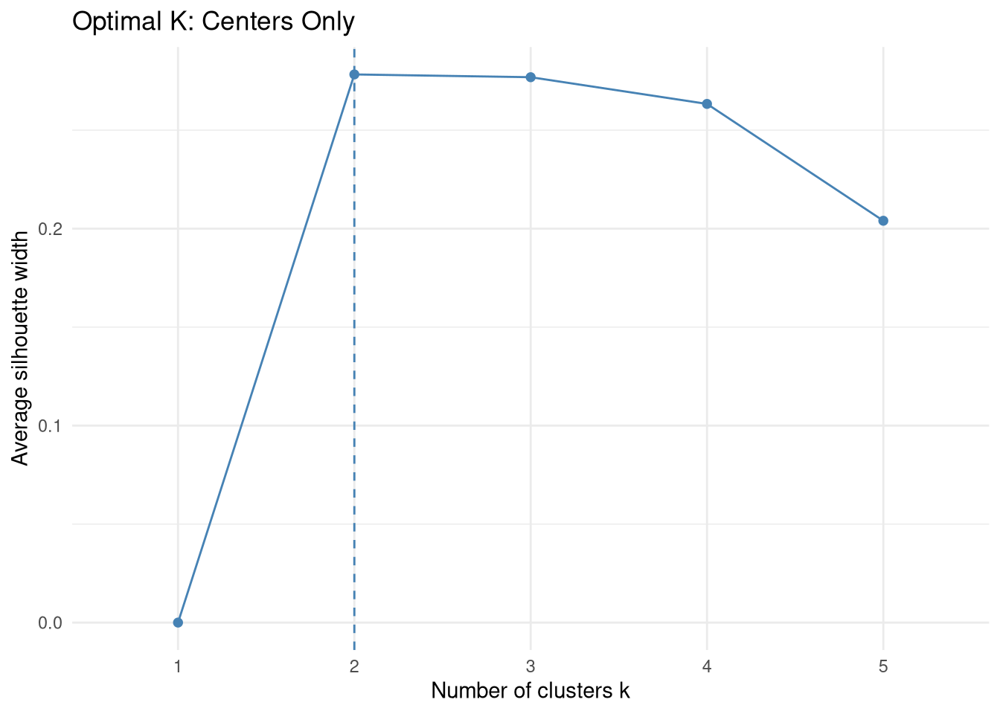
# Perform k-means (assuming optimal k = 2)
set.seed(2024)
centers_km <- kmeans(centers_scaled, centers = 2, nstart = 25)
# Visualize
fviz_cluster(centers_km, data = centers_scaled,
palette = c("#E7B800", "#00AFBB"),
main = "Center Archetypes",
ggtheme = theme_minimal())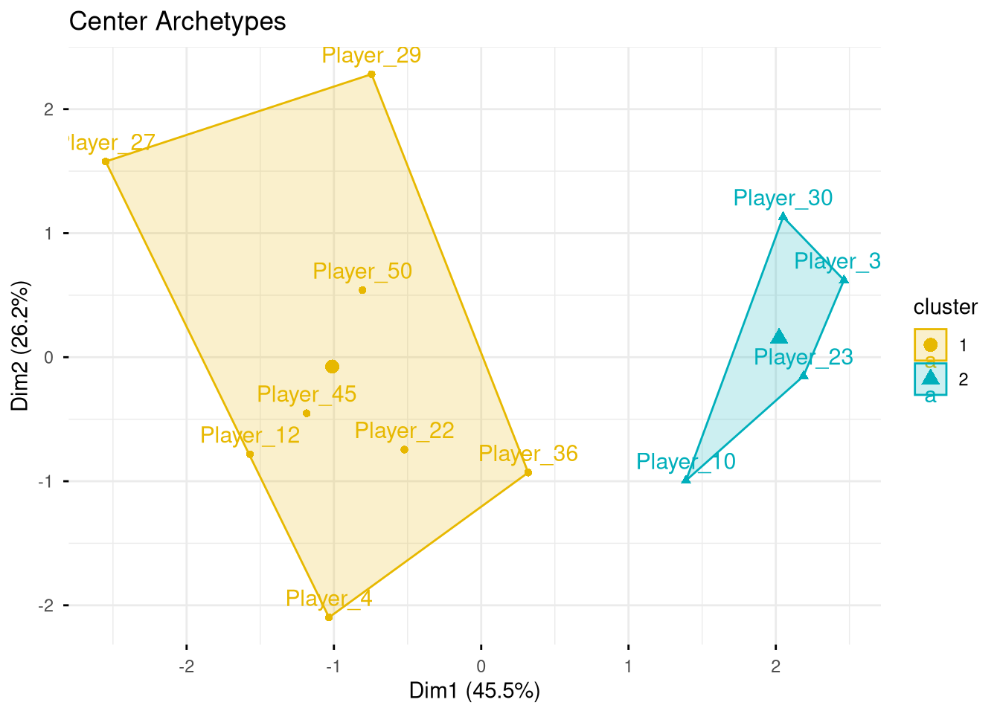
# Interpret clusters
centers$center_cluster <- centers_km$cluster
center_profiles <- centers %>%
group_by(center_cluster) %>%
dplyr::summarize(
n = n(),
avg_points = round(mean(points_per_game), 1),
avg_rebounds = round(mean(rebounds_per_game), 1),
avg_blocks = round(mean(blocks_per_game), 1),
avg_assists = round(mean(assists_per_game), 1),
.groups = "drop"
)
print(center_profiles)## # A tibble: 2 × 6
## center_cluster n avg_points avg_rebounds avg_blocks avg_assists
## <int> <int> <dbl> <dbl> <dbl> <dbl>
## 1 1 8 9.9 7.4 1.7 3.3
## 2 2 4 23.1 9.1 0.8 1.3##
## --- Center Types ---## Cluster 1: Offensive Centers - Higher scoring, moderate rebounding## Cluster 2: Defensive Centers - Lower scoring, high rebounding/blocking12.16.5 Solution 5: Team Clustering Application
# Create team data
set.seed(2024)
teams_ex5 <- data.frame(
team = paste0("Team_", LETTERS[1:20]),
wins = sample(10:25, 20, replace = TRUE),
points_per_game = round(rnorm(20, mean = 75, sd = 8), 1),
points_allowed = round(rnorm(20, mean = 75, sd = 8), 1),
three_point_pct = round(rnorm(20, mean = 35, sd = 5), 1),
turnover_rate = round(rnorm(20, mean = 14, sd = 3), 1)
)
# Scale and cluster
teams_scaled <- scale(teams_ex5[, -1])
rownames(teams_scaled) <- teams_ex5$team
set.seed(456)
teams_km <- kmeans(teams_scaled, centers = 3, nstart = 25)
# Visualization 1: Cluster plot
fviz_cluster(teams_km, data = teams_scaled,
palette = c("#00AFBB", "#E7B800", "#FC4E07"),
main = "Team Strategy Clusters",
ggtheme = theme_minimal())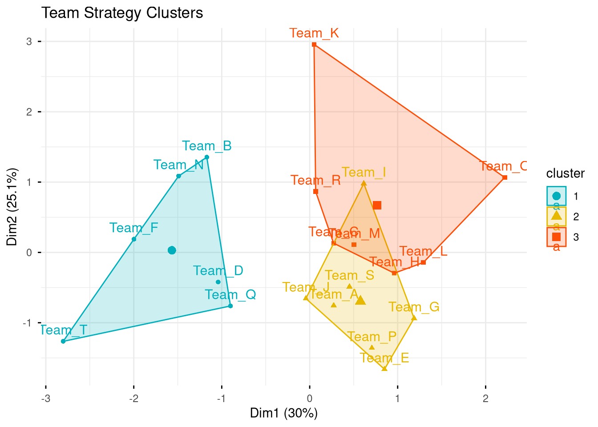
# Visualization 2: Cluster characteristics
teams_ex5$cluster <- teams_km$cluster
team_summary <- teams_ex5 %>%
group_by(cluster) %>%
dplyr::summarize(
n_teams = n(),
avg_wins = round(mean(wins), 1),
avg_ppg = round(mean(points_per_game), 1),
avg_pa = round(mean(points_allowed), 1),
avg_3pt = round(mean(three_point_pct), 1),
avg_to = round(mean(turnover_rate), 1),
.groups = "drop"
)
print(team_summary)## # A tibble: 3 × 7
## cluster n_teams avg_wins avg_ppg avg_pa avg_3pt avg_to
## <int> <int> <dbl> <dbl> <dbl> <dbl> <dbl>
## 1 1 6 16.5 75.2 82.3 29 12.7
## 2 2 7 19.9 60.1 73.9 35.7 15.1
## 3 3 7 21.4 80.6 72.8 38.2 14.6# Visualization 2: Bar chart comparison
team_summary_long <- team_summary %>%
tidyr::pivot_longer(cols = starts_with("avg_"),
names_to = "stat", values_to = "value")
ggplot(team_summary_long, aes(x = stat, y = value, fill = as.factor(cluster))) +
geom_col(position = "dodge") +
scale_fill_manual(values = c("#00AFBB", "#E7B800", "#FC4E07"),
name = "Cluster") +
labs(title = "Team Cluster Characteristics",
x = NULL, y = "Average Value") +
theme_minimal() +
theme(axis.text.x = element_text(angle = 45, hjust = 1))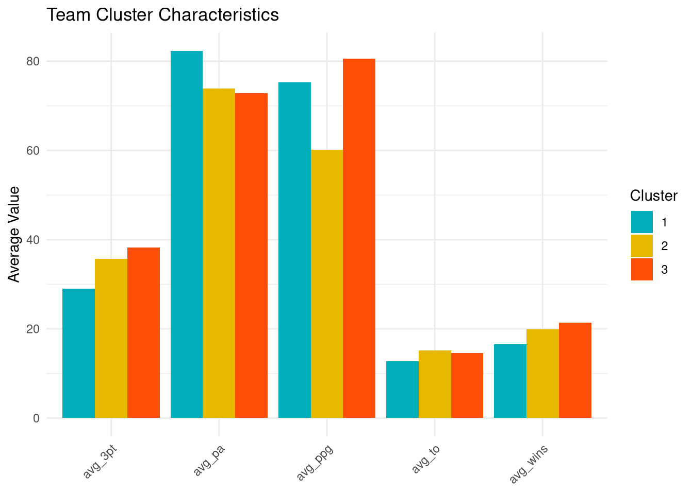
##
## === SCOUTING REPORT ===## CLUSTER 1 ( 6 teams):## High-scoring offensive teams with above-average 3-point shooting.## Defense is moderate. Game plan: Limit transition opportunities,## contest 3-pointers aggressively, force mid-range shots.## CLUSTER 2 ( 7 teams):## Defensive-minded teams that protect the ball (low turnovers).## Offense is methodical. Game plan: Push tempo, force rushed decisions,## create transition opportunities off their missed shots.## CLUSTER 3 ( 7 teams):## Balanced teams with moderate stats across all categories.## No obvious weakness. Game plan: Execute fundamentals, win 50/50 balls,## exploit matchups based on our strengths vs their personnel.12.17 AI Integration Checkpoint
Before moving to the next chapter, document your clustering workflow:
- What clustering method worked best for your data?
- How did you interpret and name your clusters?
- What challenges did you face with optimal k selection?
- How would you apply clustering to your sport analytics projects?
Save your insights for future reference.
Next Chapter: We’ll explore predictive analytics and machine learning techniques to forecast outcomes, building on clustering to create comprehensive analytical models.